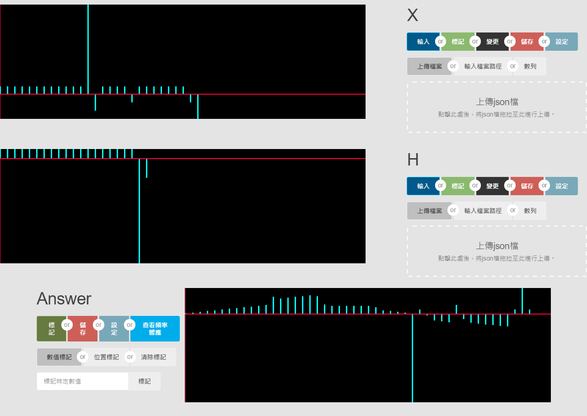

New
Convolution Computer
簡稱NCC
載點
windows 64位元版(github)
使用技術
HTML5 + CSS +JS
Pixi.js
Tocas UI 2
Vue.js
electron.js
node.js
技術簡介
運用 webGL 進行高速渲染的JS庫
在這次專案中使用於資料視覺化的部分
像是把資料
[1, 4, 1, 8, 1, -6, 11, -2, 1, 1, 1, -6, -1, 1, 1, 1, -1, -3]
變成這樣


簡單直觀的CSS庫
用來製作出賞心悅目的GUI
嗯?...覺得不怎麼樣嗎
沒關係...我們來比較一下

(眼睛有點痛)
特別致謝!!
fft-js
fft-js載點
設計方法
以合乎現實環境的情況為考量
因此並沒有將n為負數的狀況設計進去
計算捲積的程式碼
for(let n = 0; n < (input_X.length + input_H.length - 1); n++)
{
output_Y[n] = 0;
for(let k = 0; k < (input_X.length + input_H.length - 1); k++)
{
if(input_X[k] != undefined && input_H[n - k] != undefined)
{
output_Y[n] += input_X[k] * input_H[n - k];
};
};
};
計算fft的程式碼
for (let i = 0; data.length > Math.pow(2, i);) {
i++
if (data.length < Math.pow(2, i)) {
for (let j = data.length; j < Math.pow(2, i); j++) {
data[j] = 0;
}
}
}
fft = FFT.fft(data)
for (let i = 0; i < fft.length; i++) {
energy[i] = Math.sqrt(Math.pow(fft[i][0], 2) + Math.pow(fft[i][1], 2));
PhaseSngle[i] = Math.atan(fft[i][1] / fft[i][0]);
}
⇓
H[n]⇓
Y[n]→
→
→
f
f
t
→
→
→
⇓
H[ω]⇓
Y[ω]製作過程中遇到的問題
我是誰?
我從哪裡來?
我要到哪裡去?
感謝頻率響應跟離散傅立葉轉換讓我重新思考人生
雖然
不管是人生還是專案
到最後都還是沒弄懂
好!!
悲傷的事說完了，說點
問題 1.
[ X, X, X, X ]
與
[ X, X, X, X, 0, 0, 0, 0 ]
DFT後不太一樣(?????
以[1, -1 ]為例
[ 1, -1, 0, 0 ]
轉換為
[ 0, 1.414213562373095, 2, 1.4142135623730951 ]
轉換為
[ 0, 0.7653668647301795, 1.414213562373095, 1.8477590650225735, 2, 1.8477590650225735, 1.4142135623730951, 0.7653668647301797 ]
仔細觀察就會發現
兩者起伏是一樣的這讓我開始思考第2個問題
問題 2.
DFT後最大的n代表多少⇓
每一點的間格又代表多少
⇓
難道離散頻譜也是對連續頻譜取樣!?
如果是
又要怎麼在最大頻率="無限"的連續頻譜取樣到這裡我又再度放棄思考了...
有哪位好心人能解決我的疑惑的話
請在我demo完後再幫我解惑
不然我大概會直接放棄思考而跳過demo
實際展(炫)示(技)
謝謝大家
這裡是備案
如果看到這裡...就表示程式無法執行...
程式無法執行...
無法執行...
或是把它當
說明手冊
讀取數據
標記
變更數值
儲存
設定
其他
頻率響應特別篇
step.0
按Enter進入程式
step.1
讀取數據目錄
step.1-1
拖曳檔案以讀取
step.1-2

輸入檔案的絕對路徑以讀取
step.1-3
手動輸入數值以讀取
step.2
標記目錄
step.2-1
會用輸入的數值作為目標進行標記step.2-2
 會用輸入的區域作為目標進行標記
會用輸入的區域作為目標進行標記
step.2-3
標記可重複疊加按一下"清除標記"，即可將標記清除
step.3
變更數值目錄
step.3
 利用變更數值的功能即可將標記部份的數值變更
利用變更數值的功能即可將標記部份的數值變更

step.4
儲存目錄
step.4-1
可以將資料存成json檔
[1, 1, 1, 1, 1, 1, 1, 1, 1, 1, 1, 1, 11, -2, 1, 1, 1, 1, -1, 1, 1, 1, 1, 1, 1, 1, -1, -3]
png圖檔

step.4-2
保存的檔案會放在ConvolutionComputer/resources/app/printFile/
step.5
設定目錄
step.5-1
 設定可以調整資料視圖的
設定可以調整資料視圖的
顏色
大小
按下儲存後會將設定保存step.5-2
與 "A" "D" 鍵的視圖移動速度
"W" "S" 鍵的視圖縮放倍率
step.6
其他目錄
step.6-1
系統會自動以現有的X與H計算出Answer
step.6-2
小功能 : 藉由位置標記的功能，可增加數值散佈的範圍
step.7
頻率響應特別篇目錄
step.7-1
點擊"查看頻率響應"
step.7-2
點擊後會彈出新視窗
step.7-3
由"檢視"查看頻率大小或相位角點擊標準化作資料補正
⇒把X或H的資料數用 0 填至跟Y相等
補正前的頻率大小
補正後的頻率大小